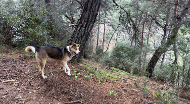

Who Are We?
For years, people have marveled at the strange behaviors exhibited by their pets, particularly dogs. From inexplicable barking at nothing to staring into corners of a room for long periods, some pet owners have often wondered: Could their pets be sensing something beyond the ordinary? The Paranormal Canine Research Collective (PCRC) is dedicated to investigating such mysterious canine behaviors and exploring the possibility that our pets may be aware of supernatural forces that humans cannot perceive.
The goal of the PCRC is not to dismiss these occurrences as mere quirks of animal behavior, but to delve deeper into whether these seemingly odd actions could be indicative of something paranormal. We aim to provide scientific inquiry, research, and understanding of these phenomena, and to offer support for those who feel that their dogs may be experiencing something beyond our understanding.
Mission Statement
Investigate reports of unexplained canine behavior using both observational techniques and paranormal research tools.
Educate pet owners about the potential paranormal causes behind their dogs' strange actions.
Collect and document evidence of paranormal phenomena related to dogs, including behavioral patterns, sensory responses, and unexplained events.
Bridge the gap between folklore, mythology, and modern scientific methods by exploring how dogs may interact with spiritual entities or energies.
Offer guidance and emotional support to pet owners who may feel concerned or confused by their dog's behavior.
Memorial
On April 30th, 2001, Jarred Tupas, fell victim to paranormal canine and cult activities. What began as an ordinary evening took a sinister turn. In the days leading up to their death, they spoke of their dog’s and roommates' unusual behaviors, so they asked for our help. Unfortunately, we arrived too late and their life has already been taken away. On April 30th, 2001, Jarred Tupas, fell victim to paranormal canine and cult activities. What began as an ordinary evening took a sinister turn. In the days leading up to their death, they spoke of their dog’s and roommates' unusual behaviors, so they asked for our help. Unfortunately, we arrived too late and their life has already been taken away.